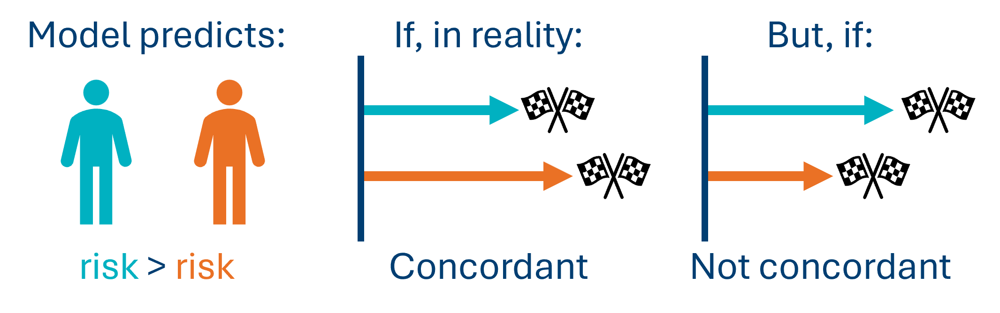
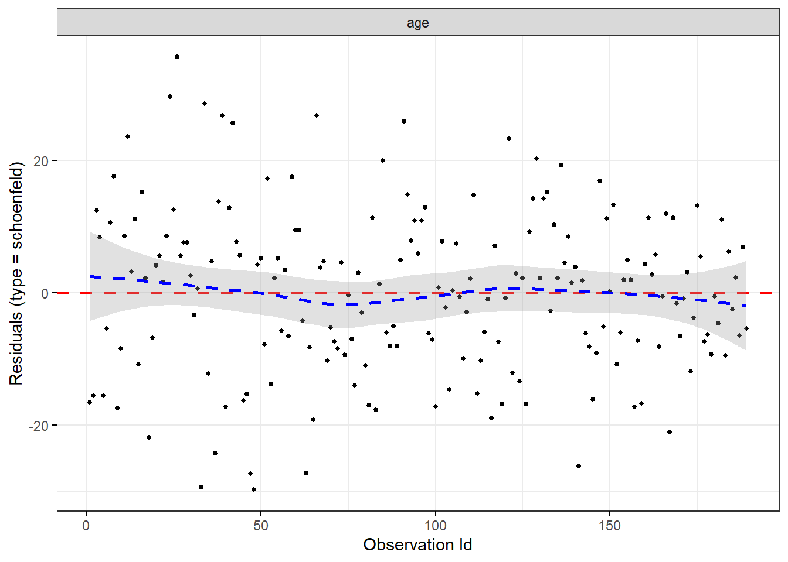

# load the required packages for fitting & visualising
library(tidyverse)
library(survival)
library(survminer)8 Evaluating a Cox model
Last chapter, we fitted a simple Cox model with one continuous predictor.
In this chapter, we’ll focus on how to judge the quality of that Cox model, and how to assess whether the assumptions of Cox regression were met.
8.1 Libraries and functions
NoteClick to expand
import numpy as np
import pandas as pd
from lifelines import *
import matplotlib.pyplot as plt
from lifelines.statistics import multivariate_logrank_test
from lifelines.statistics import pairwise_logrank_test8.2 The models
Very briefly, let’s recreate the model from last chapter using our hospital_stays.csv dataset.
If it’s already in your global environment, you can skip this step.
hospital_stays <- read_csv("data/hospital_stays.csv")
cox_hosp <- coxph(Surv(time, discharged) ~ age,
data = hospital_stays)Last chapter, we looked at:
- The significance of the individual
agepredictor - Global significance tests for the model as a whole
- How to understand the hazard ratio
However, interpreting all of those numbers and tests from the model summary requires us to be confident that this model is the right choice for these data. How can we assess whether that’s the case?
8.3 Concordance
One of the numbers in the output that we can use is concordance. This is a measure of goodness-of-fit, or predictive accuracy. It’s analogous to (but not quite the same as) \(R^2\) in linear models.
It is calculated by taking each possible pair of individuals in the dataset and ranking their actual survival times, and then comparing it to what the model predicted their risks/survival times to be.
So, if the model predicted that patient A had a higher risk than patient B of experiencing the event based on their values of the predictor variable(s), and patient A also experienced the event sooner than patient B in reality, this would be a “concordant” pair.

Here’s how concordance is calculated:
- Each possible pair in the dataset is checked; so, if a dataset contains 20 observations, this means 190 pairwise comparisons.
- If the model gets everything completely perfect, we would see a concordance of 1.
- If the model is doing no better than random guessing, we would see a concordance of 0.5.
A concordance of around 0.7 as we see in our model above suggests that for a randomly selected pair of patients, the model correctly predicts who is discharged first 70% of the time.
In other words, concordance measures how good the model is at ordering individuals, in terms of when they are likely to experience the event of interest.
8.4 Assumptions
Like any type of statistical model, a Cox regression makes assumptions about the data and experimental design. If they’re not met, we shouldn’t trust the model, even (especially!) if the numbers in the output look tempting.
Cox regression has some assumptions in common with the log-rank test, and these assumptions have already been explored in sufficient detail elsewhere:
The others we will explore more here:
- Linearity
- Proportional hazards
8.5 Linearity
Although a Cox model is not itself linear, it does contain a linear bit in it, which we are transforming/embedding inside a non-linear equation. And we do still need that linear bit to actually be linear.
To put it more mathematically: we know that our predictor variables will not have a linear relationship directly with the hazard, or with the time-to-event; but they should have a linear relationship with the log of the hazard.
So, if you plotted the predictor variable against the log hazard, we expect a straight line.
We only need to concern ourselves with linearity for continuous predictors (not categorical ones).
8.5.1 Martingale residuals plots
The most common method for checking linearity in Cox regression is by plotting something called the Martingale residuals.
We do this separately for each continuous predictor. So, if your model contains three continuous predictor variables, you would need three separate Martingale plots.
You don’t really need to know what Martingale residuals are, just how to interpret the plot.
NoteWhat should the Martingale plot look like?
If the linearity assumption holds for a continuous predictor, then the plot will show a roughly straight (linear) trend line. There might be some wiggles and bumps, but they aren’t a systematic/clear trend.
Another way to phrase it is that we want the plot to have a monotonic trend. This means that the gradient of the line is either always decreasing, or always increasing (i.e., the line doesn’t start going one direction and then change to go another).
Here are two examples of “good” Martingale plots.
These are perhaps the best you’re likely to see, especially the first one. Notice how the trend lines aren’t perfectly straight in either case, but the wobbles and bumps look just like random noise, rather than anything “real”.


Below are two examples of “bad” plots.
Again, the first is very exaggerated; the second is less extreme, but still has a clear turn in it that isn’t just a random wiggle, but a systematic trend (in this case, a U-shape).
In both of these cases, we would probably want to perform some kind of transformation for our predictor variable, because the linearity assumption is clearly violated.


So, how are these Martingale residual plots produced?
The survminer package comes built-in with a function for producing the Martingale residual plots.
Here it is, applied to our continuous age predictor variable:
ggcoxfunctional(cox_hosp, type = "martingale")Warning in .get_data(fit, data): The `data` argument is not provided. Data will
be extracted from model fit.
This function automatically creates a plot for each of the continuous predictors specified. In our example we only have one, age.
On each plot, there will be a trend line; we would like this line to be as close as possible to a single, straight trend line (like we would get in a simple linear regression).
If the line has strong bends, wiggles or turning points (e.g., it is U-shaped or S-shaped) this is generally a sign that we need to transform our predictor variable before we include it in the model.
Our line above is not perfectly straight, but it is always decreasing, with no super dramatic turns.
This is a pretty good plot! It’s likely that the linearity assumption is met.
ImportantCaveats and common issues
Producing these Martingale plots does not always go smoothly.
If you attempt to run the ggcoxfunctional functional and get an error, you might find that one of the two issues is at play:
- You have a categorical predictor; this function/method only works for continuous predictors
- There are missing values of your continuous predictor in the dataset
If you’re facing issue #2, there is something you can do to fix it.
Let’s imagine that there are missing values of age in our hospital_stays dataset. Here’s how we could tackle that to still produce a Martingale residuals plot of the type shown above:
First, we create a new version of the dataset with all missing values removed.
hospital_stays_narm <- na.omit(hospital_stays)Then, we can refit the model using this reduced dataset, and from there, run ggcoxfunctional successfully.
cox_hosp_narm <- coxph(Surv(time, discharged) ~ age, data = hospital_stays_narm)
ggcoxfunctional(cox_hosp_narm, data = hospital_stays_narm)
(In this example, the plot looks identical, because we didn’t actually have any missing values!)
8.6 Proportional hazards
In a previous section, the idea of proportional hazards was introduced in the context of the log-rank test.
Cox regression includes proportional hazards as a formal assumption, so we’ll go over it in more detail here, along with several different methods for checking it.
8.6.1 What are proportional hazards?
The formal definition of proportional hazards is that the ratio of the hazard rates between any two groups, or between any two individuals, remains constant over time.
So, if group A has double the risk of death compared to group B on day 1, then they must also have double the risk of death on day 2, day 10, day 100, and so on.
8.6.2 Inspecting the survival curves
One of the easiest methods for checking proportional hazards quickly is via the survival curves themselves.
This is most effective when the dataset is large enough to produce curves that are quite smooth; in smaller datasets, the “staircase” effect is stronger, and curves will often naturally look like they’re criss-crossing even when the hazards are actually proportional.

However, examining the survival curves like this is only really helpful for categorical predictors - as we discussed last chapter, things get tricky with continuous predictors such as age.
Just to get a sense of how we could use this visual approach, let’s examine a model that uses surgery instead of age as a predictor.
Note: we have to use the survfit function, rather than the coxph function, to create an object that can then be passed to the ggsurvplot function.
However, once we’ve checked the proportional hazards, we could run coxph(Surv(time, discharged) ~ surgery just fine - check out the second exercise from last chapter for the proof!
hosp_surgery_surv <- survfit(Surv(time, discharged) ~ surgery, data = hospital_stays)
ggsurvplot(hosp_surgery_surv)
I’d say those curves look pretty good! There’s no obvious crossing over, delays, or “catching up” that would raise any red flags just from the eye test.
Log-log plots
Sometimes, it’s helpful to have a “second view” of our survival curves - for example, creating a log-log survival curves.
These curves have the logarithm of time on the x-axis, and the logarithm of survival probability on the y-axis (instead of the raw time and survival probability).
You are hoping to see approximately parallel log-log curves, if the hazards truly are proportional.
As with the regular survival curves, however, this doesn’t work very well for a continuous predictor like age - here’s the proof:
Re-fit the model using survfit instead of coxph:
hosp_age_surv <- survfit(Surv(time, discharged) ~ age, data = hospital_stays)Then, make use of the plot function combined with a specific fun = "cloglog argument:
plot(hosp_age_surv, fun = "cloglog")
In our log-log plot above, it’s kind of hard to tell whether the lines are parallel or not, because there’s so many of them and they intersect with each other. Not helpful.
Here’s the log-log survival plot for a Cox regression with surgery instead of age as a predictor, where this visual approach is much more helpful:

This looks pretty good! Our two log-log survival curves stratified by surgery look more or less parallel, give or take a bit of noisiness as you would expect to see.
8.6.3 Schoenfeld residuals
For a different approach that doesn’t rely on survival curves - and is therefore much more applicable to continuous predictors - we can examine something called the Schoenfeld residuals.
These residuals are calculated per event (or, per row of the dataset, excluding censored individuals). Broadly speaking, they capture the difference between:
- the actual observed value of the predictor(s) for the individual when they experienced the event
- the expected value of the predictor(s) if the model were correct
When we plot these residuals, we want to see no systematic pattern in the residuals at all. We’re looking for a cloud of data points with no correlation, with a trend that is flat around 0.
This is very similar to what we’re looking for in a residual plot for a standard linear model.
Let’s visualise the Schoenfeld residuals for our Cox regression with age as a predictor:
The ggcoxdiagnostics function from the survminer package can be used to produce Schoenfeld residuals plots without any extra work needed from you.
Make sure to set the type argument equal to "schoenfeld".
ggcoxdiagnostics(cox_hosp, type = "schoenfeld")
This looks good! The blue trend line is very close to the red “goal” line and there are no obvious patterns I can see in the cloud of black data points.
8.7 Exercises
8.7.1 Lung cancer (revisited)
8.8 Summary
Like with any statistical model, we must be careful to assess the quality of a Cox regression model before interpreting its output, to determine our level of confidence and trust.
In particular, we should make sure to think about the model assumptions. If they’re not met, we should proceed extremely cautiously with any interpretation.
TipKey Points
- We can use concordance to assess the goodness-of-fit of our Cox regression model
- Cox regression makes several assumptions about the dataset and the relationship between variables
- These assumptions include independence and non-informative censoring, as in a log-rank test
- A Cox-specific assumption is linearity, which we can test with Martingale residual plots
- Cox regression also requires proportional hazards, which can be assessed visually in several ways